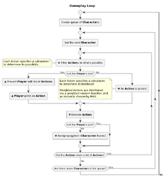

Ineffable
What is it?
|

|
|
Diagram of Ineffable's Gameplay Loop
|
Ineffable is a simulation engine for one-of-a-kind, interactive narrative experiences in living worlds that grow along with the reader/player
It's also whatever proof-of-concept game I create along with it
The guiding concept is to give you more options each turn than any other game, and if it’s an option for you, it’s an option for non-player characters as well
It exists in pieces which you may never see in their entirety. Something tangible may come of it someday, who's to say
Non-Player Characters
Non-player characters are powered by an AI which is essentially a dynamic forward chaining rules engine on top of a pile of primitive neural nets in front of a relational database
Actions
Actions have categories which have no impact on gameplay or simulation but make interfaces cleaner
Actions have:
- Possibility checks
- Probability checks
- Effects
Example actions include:
- Build shelter
- Socialize
- Gather food
- Explore
- Create monument
An action can result in updates to the game state (a character loses a spoon, a tent is erected, etc)
An action can also result in a set of choices which themselves kick off other actions
Factors
Various factors influence possibility and probability for actions
Personality Traits
-
Personality traits are spectrums and -1 to 1 values
Example personality traits include:
- Cowardly - Brave
- Paranoid - Trusting
- Chaste - Lustful
- Ambitious - Content
- Arrogant - Humble
- Diligent - Lazy
- Patient - Impatient
- Stubborn - Fickle
- Forgiving - Vengeful
- Reserved - Sociable
- Greedy - Generous
- Just - Arbitrary
Archetypes
| Innocent | Trusting | Chaste | Cowardly |
|---|
| Visionary | Ambitious | Fickle | Paranoid |
|---|
| Protector | Just | Forgiving | Content |
|---|
| Sage | Generous | Reserved | Just |
|---|
| Everyman | Diligent | Humble | Generous |
|---|
| Champion | Brave | Patient | Diligent |
|---|
| Lover | Trusting | Lustful | Brave |
|---|
| Leader | Ambitious | Stubborn | Trusting |
|---|
| Outlaw | Just | Vengeful | Ambitious |
|---|
| Jester | Generous | Sociable | Arbitrary |
|---|
| Clueless | Diligent | Arrogant | Greedy |
|---|
| Artist | Brave | Impatient | Lazy |
|---|
Characters have personality traits which change over time. An archetype can be determined based on a character's current traits for ease of communication
Relationships
-
Relationships have types and 0 to 1 values
Example types of relationships include:
- Peer
- Neighbor
- Friend
- Family
- Rival
- Enemy
- Mentor
- Apprentice
Skills
-
Some actions are associated directly with skills which, partially, determine their outcomes
For example, any character with some flour, water, and a source of heat can attempt to make bread, but it might not go so well the first time
Skills range from 0 to 1
Values
To do
Health
To do
Emotional State
To do
World State
-
World state includes everything that isn't related to character state
World state examples include:
- There are two tents in the settlement
- Today is Tuesday
- It's windy here
Achievements
Achievements have no impact on gameplay or simulation but ease goal tracking for players
Example achievements include:
- Had 3 close friendships
- Built 10 monuments
- Built 100 monuments
- Discovered the secret cave
- Mastered the Cooking skill
Inspiration
I've wanted something like Ineffable since before I hit double digits, so I've had the benefit of being inspired by the Dynabook, A Young Lady's Illustrated Primer, Dungeons & Dragons, Harvest Moon, and so many other efforts
It's worth noting that I've also contributed to projects with similar construction, including story-graph